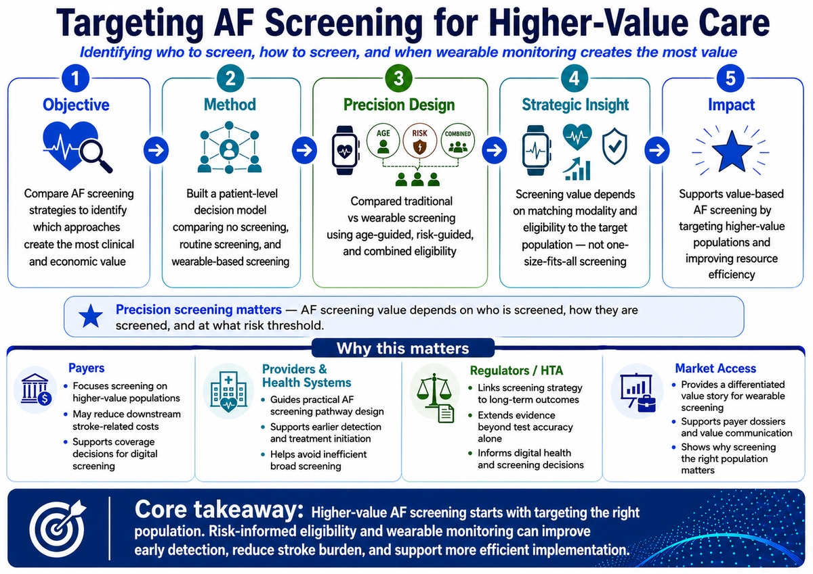
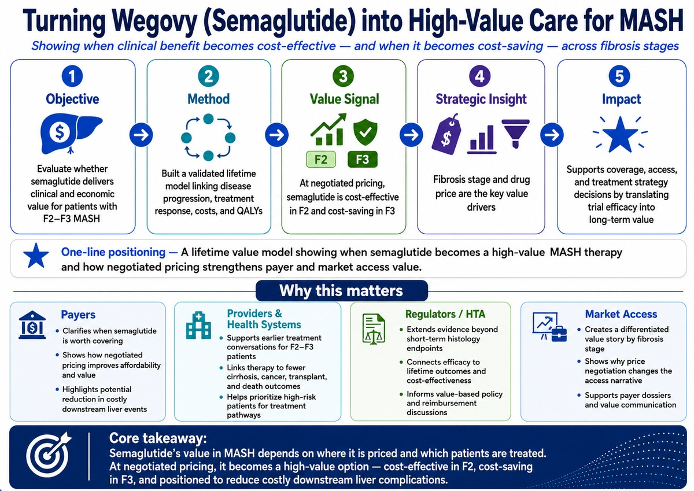
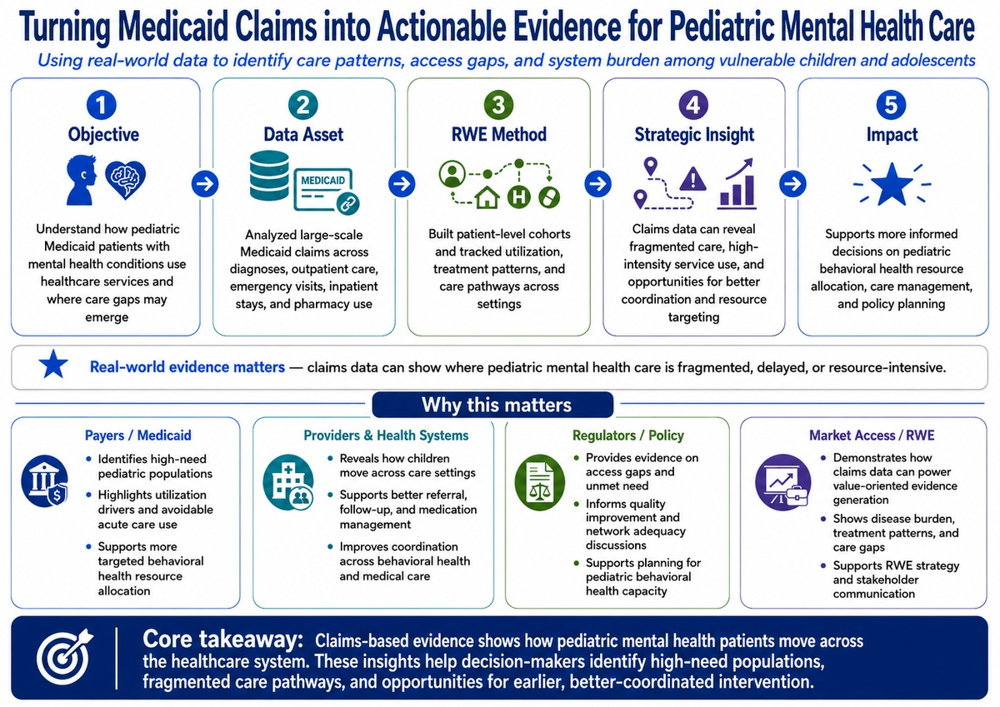

HEOR & Value
Cost-effectiveness, budget impact, value communication, and payer evidence to support coverage and reimbursement decisions.
PhD-trained quantitative scientist with 6+ years of experience translating healthcare data into evidence for payer, provider, market access, and policy decisions.
I combine quantitative methods, real-world data, and decision science to generate evidence that drives impact.
Cost-effectiveness, budget impact, value communication, and payer evidence to support coverage and reimbursement decisions.
Treatment patterns, utilization, patient journeys, disease burden, and access gaps using healthcare data to inform strategy and resource allocation.
Microsimulation, scenario analysis, and innovative modeling techniques that strengthen value narratives.
Building robust roadmaps that turn data into actionable assets, supported by diverse experience and training in Industrial Engineering.
Featured Portfolio
Projects that connect evidence to strategy.
Built a synthetic liver allocation model to show how earlier MASH treatment may reduce transplant pressure and create broader system value.
View Diagram & Impact
Identified who to screen, how to screen, and when precision screening with wearable monitoring creates the most value.
View Diagram & Impact
Modeled how fibrosis stage and pricing shape semaglutide’s economic and market access value.
View Diagram & Impact
Used Medicaid claims to map care patterns, identify high-need populations, and reveal care coordination opportunities.
View Diagram & ImpactRezdiffra: System-level Value

Market: United States, Germany, France, Italy and Spain
Decision problem: Can earlier MASH treatment change downstream transplant demand, waitlist pressure, and organ allocation capacity—not only for MASH patients, but for the broader transplant system?
A synthetic liver allocation model connecting MASH disease progression, waitlist dynamics, and donor liver allocation to evaluate how Rezdiffra adoption may affect transplant demand and system capacity.
Presented at ISPOR Europe 2025 (US model) and MASH-TAG 2026 (Germany) & Manuscript submitted
Back to Selected WorkPrecision Screening Case Study

Decision problem: Who should be screened for AF, with which screening pathway, and at what risk threshold to generate the strongest clinical and economic value?
A patient-level microsimulation model designed to guide value-based AF screening by identifying which populations, screening pathways, and risk thresholds create the strongest clinical and economic case.
Presented at European Society of Cardiology (ESC) 2025 and ISPOR 2026
Back to Selected WorkValue Evidence Case Study
Decision problem: At which fibrosis stage and price point does Wegovy become a high-value MASH therapy for payers and access decision-makers?
A lifetime value model translating semaglutide’s clinical efficacy into payer-relevant evidence across fibrosis stages and pricing scenarios.
Manuscript submitted
Back to Selected WorkReal-World Evidence Case Study

Decision problem: Where do Medicaid-insured children with mental health conditions receive care, and which utilization patterns signal unmet need, fragmented follow-up, or high-intensity service use?
A claims-based real-world evidence study mapping pediatric mental health care patterns, utilization intensity, and opportunities for better care coordination among Medicaid-insured children.
Manuscript submitted
Back to Selected WorkOther Work

Compares strategies by impact, testing burden, and cost-effectiveness.
Simulation and analytics models supporting vaccination, surveillance, and outbreak-response decisions.
Publications
Experience
Mass General Brigham / Harvard Medical School — HEOR, MASH, liver transplant, and AF screening models.
Georgia Tech — Medicaid claims analytics, healthcare decision science, and modeling.
CDC — Infectious disease analytics, surveillance, and public health strategy.
Contact